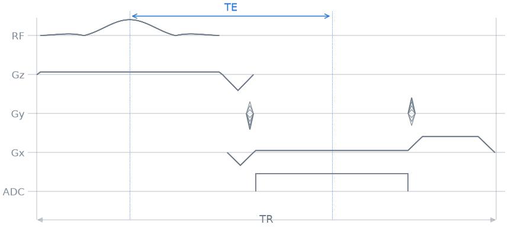
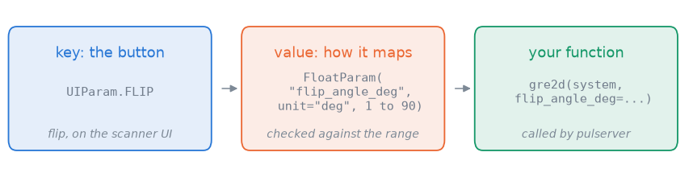
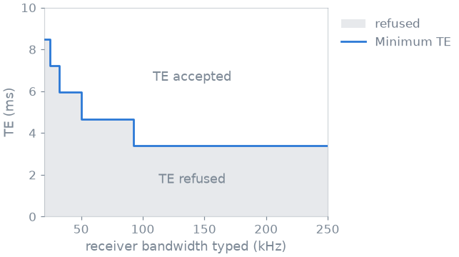

Note
Go to the end to download the full example code.
2. Your sequence in the scanner UI#
In lesson 1 the operator edited the protocol of gre2d, and pulserver
answered every edit with the TE, the TR and the scan time. Both the protocol
and the answers came from a plugin: a short Python class wrapped around a
sequence function. In this lesson you write that plugin yourself, one piece at
a time, and after each piece you look at what changed for the operator.
Learning objectives
Turn a sequence function into a plugin the scanner UI can show.
Choose the parameters the operator edits, with their units and ranges.
Write an
evaluatethat tells the operator what the protocol achieves, and refuses what your sequence cannot play.Expose one more parameter, and watch the minimum TE follow it.
Previous: 1. Your first scan. Next: 3. What the scanner plays, where you look at what pulserver makes of your sequence before the scanner plays it.
Your sequence#
A sequence is a Python function. It takes the scanner’s limits and keyword
arguments, and returns a Pulseq sequence. gre2d, the one you scanned in
lesson 1, is such a function from pypulseqpp; any function you write in the
same shape works the same way.
The limits are a pypulseqpp.Opts, the system object of Pulseq
and PyPulseq: field strength, gradient amplitude and slew rate, raster
times. On a scanner pulserver builds it from what the scanner sends; here you
build it yourself.
Here is one TR of gre2d, designed with the shortest TE and TR its readout
allows (te=None, tr=None):

Each TR excites the slice, encodes one phase-encoding line, and reads out one echo. The scan repeats it once per line (128 by default), after a few dummy TRs that bring the magnetization to its steady state.
The smallest plugin#
A plugin is a class with two attributes. app is your sequence function.
protocol says which of its arguments the operator can edit. It is a
dictionary, and each item pairs two things pulserver gives you:
the key is a button of the scanner UI, a member of
UIParamsuch asUIParam.FLIPorUIParam.TE. The set of buttons is fixed: they are the parameters the scanner’s interpreter knows how to show.the value says how that button drives your function: which argument it sets (
"flip_angle_deg"), its unit and the range the operator may type. It is one of the*Paramclasses ofpulserver.design, chosen by the kind of number:FloatParam,IntParam,TimeParamand a few more.
Start with one item, the flip angle:
from pulserver.design import FloatParam, IntParam, SequencePlugin, TimeParam
from pulserver.protocol import UIParam, format_listing
class Gre(SequencePlugin):
app = gre2d
protocol = {
UIParam.FLIP: FloatParam(
"flip_angle_deg", unit="deg", range_min=1, range_max=90
),
}
ui(Gre())

[Protocol]
flip: float|typein|12.0|1|90|1.0|deg
nex: float|typein|1.0|1.0|16.0|1.0|
[Protocol End]
This is what the scanner receives when the operator opens your sequence: one
line per parameter with its type, current value, range, step and unit. The
current value, 12 degrees, is the default of gre2d’s
flip_angle_deg. nex, the number of averages, is added by pulserver,
which plays the sequence that many times. Every other argument of gre2d
keeps its default and is out of the operator’s reach.
Units and ranges#
The scanner works in its own units, your function in SI. Each entry
converts between the two. A TimeParam is in
seconds in your function and in integer microseconds between pulserver and
the scanner; the operator sees and types milliseconds, and the scanner’s
interpreter converts. So range_min=1000
below is 1 ms on the UI. A
FloatParam takes a unit and a scale, for
example millimetres on the scanner and metres in your function
(scale=1e-3). The range is what the operator is allowed to type.
Add the echo time, the repetition time and the number of phase-encoding lines:
class Gre(SequencePlugin):
app = gre2d
protocol = {
UIParam.FLIP: FloatParam(
"flip_angle_deg", unit="deg", range_min=1, range_max=90
),
UIParam.TE: TimeParam("te", range_min=1000, range_max=80000),
UIParam.TR: TimeParam("tr", range_min=1000, range_max=5_000_000),
UIParam.NY: IntParam("n_y", range_min=32, range_max=512, range_incr=2),
}
plugin = Gre()
ui(plugin)
[Protocol]
flip: float|typein|12.0|1|90|1.0|deg
TE: int|typein|8000|1000|80000|1|us
TR: int|typein|250000|1000|5000000|1|us
ny: int|typein|128|32|512|2|
nex: float|typein|1.0|1.0|16.0|1.0|
[Protocol End]
What the operator gets back#
Every time the operator changes a value, the scanner sends the protocol to
pulserver, and pulserver calls your plugin’s validate. Here the operator
types a TE of 2 ms, which reaches pulserver as 2000 µs:
validation = plugin.validate(system, {UIParam.TE: 2000})
print(f"valid: {validation.valid}, scan time: {validation.duration}")
valid: True, scan time: None
The protocol is accepted, with no scan time. Your plugin has not told pulserver anything about the sequence yet, so pulserver accepts every value inside the ranges. The problem shows up only when the operator presses Scan, and pulserver designs the whole sequence:
import tempfile
from pathlib import Path
try:
plugin.design(system, validation.values, Path(tempfile.mkdtemp()))
except ValueError as error:
print(error)
the requested TE of 2.000 ms is shorter than the 3.400 ms this readout can achieve
gre2d cannot reach a 2 ms echo time with this readout, and the operator
learns it only after setting up the whole exam. An evaluate reports it
while the value is edited.
Your evaluate#
evaluate is the method pulserver calls on every edit. It receives the
scanner limits and the protocol the operator typed, and returns an
Evaluation: the protocol as your sequence will
play it, and the scan time. If the protocol is impossible, raise an
exception; its message is what the operator reads.
It runs on every keystroke, so it has to be fast: a few tens of
milliseconds. Designing the whole scan is too slow, but gre2d designs one
TR quickly, so this evaluate designs a single phase-encoding line and
reads the TE and TR it achieved. The scan time is one TR per line, plus the
dummy TRs gre2d plays before them.
protocol.arguments is what your function receives: one item per entry,
in SI units, with presets resolved. Arguments without an entry, such as
ry, are not in it and keep gre2d’s defaults. To design one line,
evaluate overrides three of them with the | of two dictionaries,
which also wins over an entry the operator edits: ry=n_y keeps one line
in every n_y, and the calibration lines and dummy TRs are dropped.
A preset adds a choice to the parameter’s menu. TEPreset.MINIMUM lets
the operator ask for the shortest TE; your function receives None for
it, which gre2d reads as “as short as possible”. On the wire a preset is
a negative code (TEPreset.MINIMUM.value, -2), which the scanner shows as
Minimum in the TE menu.
from pypulseqpp.sequences import steady_state_dummies
from pulserver.design import Evaluation
from pulserver.protocol import TEPreset
class Gre(SequencePlugin):
app = gre2d
protocol = {
UIParam.FLIP: FloatParam(
"flip_angle_deg", unit="deg", range_min=1, range_max=90
),
UIParam.TE: TimeParam(
"te", range_min=1000, range_max=80000, presets={TEPreset.MINIMUM: None}
),
UIParam.TR: TimeParam("tr", range_min=1000, range_max=5_000_000),
UIParam.NY: IntParam("n_y", range_min=32, range_max=512, range_incr=2),
}
def evaluate(self, system, protocol):
arguments = protocol.arguments
n_y = arguments["n_y"]
one_line = arguments | {"ry": n_y, "n_acs_y": 0, "n_dummy": 0}
seq = self.app(system, **one_line)
te = seq.definitions["TE"][0]
tr = seq.definitions["TR"][0]
dummies = steady_state_dummies(tr, arguments["flip_angle_deg"])
return Evaluation(
protocol.replace({UIParam.TE: te, UIParam.TR: tr}),
duration=(dummies + n_y) * tr,
)
plugin = Gre()
The same three edits, now answered by your evaluate:
for typed, value in (
("8 ms", 8000),
("2 ms", 2000),
("Minimum", TEPreset.MINIMUM.value),
):
validation = plugin.validate(system, {UIParam.TE: value})
if validation.valid:
te = validation.values[UIParam.TE] / 1e3
print(f"{typed}: valid, TE {te} ms, scan time {validation.duration:.1f} s")
else:
print(f"{typed}: refused, {validation.info}")
8 ms: valid, TE 8.0 ms, scan time 38.2 s
2 ms: refused, the requested TE of 2.000 ms is shorter than the 3.400 ms this readout can achieve
Minimum: valid, TE 3.4 ms, scan time 38.2 s
The 2 ms echo time is refused while the operator types it, with the reason
gre2d gave. Minimum comes back as the 3.4 ms the readout allows, and
that is the value the operator sees.
What evaluate reports is your plugin’s responsibility: pulserver passes
it on to the operator as it is. Designing one TR is the simplest way to
report correct values. A sequence whose timing is easy to compute can return the TE and TR
from block durations without designing anything, and one that cannot design
a short piece of itself can accept the typed values and only report the scan
time.
Exercise: expose the receiver bandwidth#
The shortest echo time depends on how long the readout lasts, and that is
set by the receiver bandwidth. gre2d takes it as
readout_bandwidth_hz, but the operator cannot change it yet. Exposing it
is one more entry; evaluate stays as it is, because it already designs
whatever the operator typed.
class GreBandwidth(Gre):
protocol = Gre.protocol | {
UIParam.BANDWIDTH: FloatParam(
"readout_bandwidth_hz", unit="Hz", range_min=1e3, range_max=1e6
),
}
plugin = GreBandwidth()
ui(plugin)
[Protocol]
flip: float|typein|12.0|1|90|1.0|deg
TE: int|dropdown|8000|1000|80000|1|us|-2
TR: int|typein|250000|1000|5000000|1|us
ny: int|typein|128|32|512|2|
nex: float|typein|1.0|1.0|16.0|1.0|
bandwidth: float|typein|250000.0|1000.0|1000000.0|1.0|Hz
[Protocol End]
Now ask for the Minimum TE at a range of bandwidths, as an operator trading signal-to-noise for echo time would:
import numpy as np
bandwidths = np.arange(20e3, 251e3, 2.5e3)
minimum_te = [
plugin.validate(
system, {UIParam.BANDWIDTH: bw, UIParam.TE: TEPreset.MINIMUM.value}
).values[UIParam.TE]
/ 1e3
for bw in bandwidths
]

Below the curve the operator’s TE is refused, above it accepted, and the Minimum preset sits on it. Lowering the bandwidth lengthens the readout and pushes the minimum TE up.
The curve is a staircase because gre2d does not play every bandwidth it
is asked for. Here its readout uses dwell times that are whole multiples of
10 µs, so it plays 100, 50, 33, 25 or 20 kHz, and a typed bandwidth is
replaced by one of them; nothing faster than 100 kHz is played. The
shipped gre2d plugin reports the bandwidth it plays back to the
operator, as you saw in lesson 1. Your evaluate could do the same by
reading the dwell time of the ADC event in seq.
In a file#
On a scanner, a plugin is a .py file in a folder pulserver is pointed
at, and its file name is the name the operator picks. The class is all the
file needs:
# sequences/my_gre.py
from pypulseqpp.sequences.sequence.gre2D_sequence import gre2d
from pulserver.design import Evaluation, FloatParam, SequencePlugin, TimeParam
from pulserver.protocol import TEPreset, UIParam
class Gre(SequencePlugin):
app = gre2d
protocol = {...}
def evaluate(self, system, protocol):
...
Lesson 6 loads your file into the virtual scanner and scans with it.
As a spec#
What this lesson built, stated the way you would ask an agent for it:
Write a pulserver SequencePlugin for pypulseqpp's gre2d. Let the operator
edit the flip angle (1-90 deg), TE (1-80 ms, with a Minimum preset), TR
(1 ms-5 s), the phase-encoding lines (32-512, even) and the receiver
bandwidth (1 kHz-1 MHz). In evaluate, design a single phase-encoding
line, report the TE and TR it achieves, and estimate the scan time as one
TR per line plus the steady-state dummies. Refuse a TE the readout cannot
reach, with gre2d's own message.
Total running time of the script: (0 minutes 1.709 seconds)